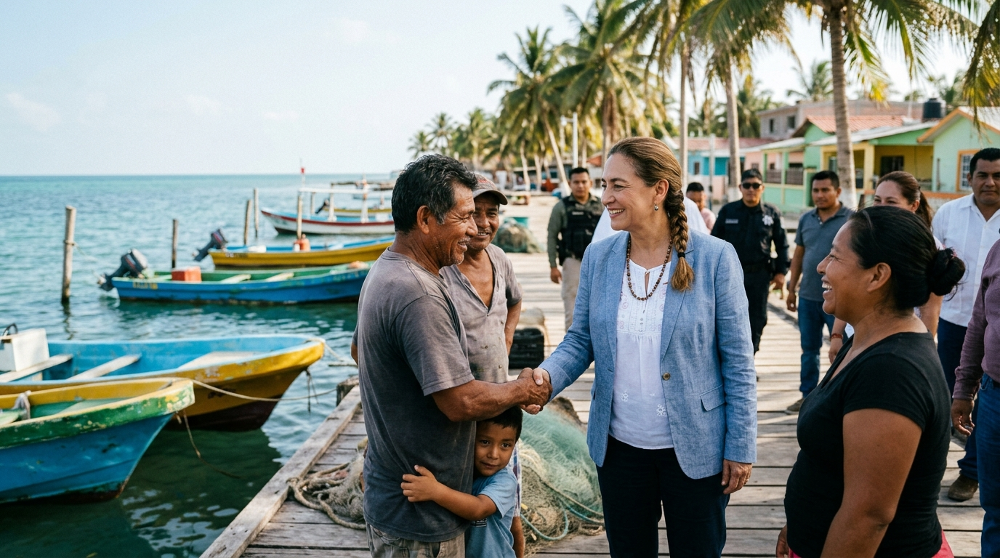

Sector PesqueroEntrega de Equipamiento Marino y Motores para Pescadores Ribereños
Diálogo y entrega de apoyos en el muelle de la Puntilla para fortalecer la seguridad y productividad de cooperativas pesqueras de la Laguna de Términos.
Ampliar evidencia y compartir
↗